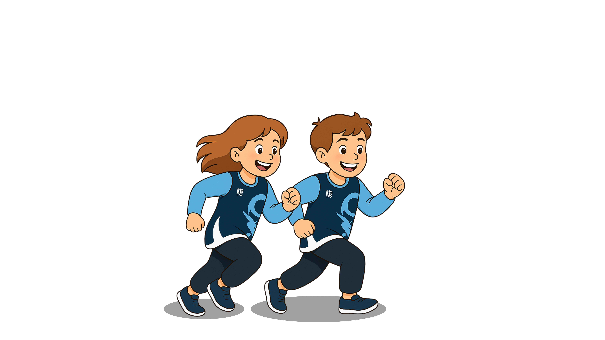
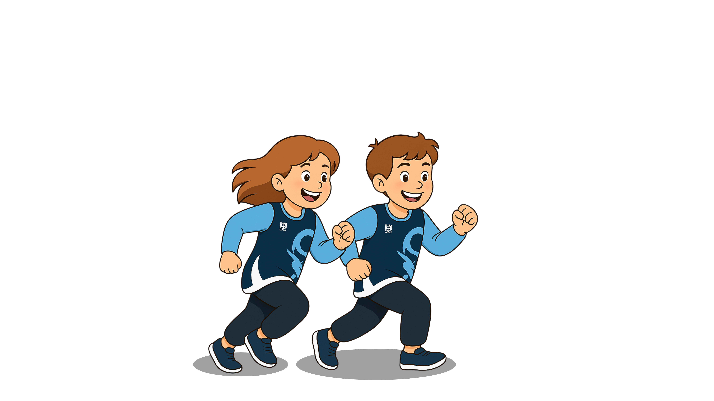

Website untuk mengelola pembelajaran dengan fitur interaktif
 

Website ini dirancang dengan menghadirkan fitur materi interaktif yang dapat membantu mahasiswa memahami isi perkuliahan dengan lebih mudah. Selain itu, terdapat pula fitur profil yang memungkinkan mahasiswa maupun dosen untuk menyimpan dan mengakses data pribadi maupun akademik secara lebih terorganisasi. Dengan adanya dua fitur ini, proses pembelajaran menjadi lebih terarah dan personal. Selain materi, website ini juga menyediakan jadwal yang terstruktur berdasarkan detail masing-masing kegiatan. Fitur ini bertujuan untuk meminimalisasi keterlambatan informasi yang sering dialami mahasiswa akibat perubahan mendadak, seperti penggunaan tempat olahraga atau penyesuaian kegiatan. Dengan jadwal yang terpusat dalam satu sistem, mahasiswa dapat lebih mudah mengikuti setiap agenda tanpa kebingungan.Latihan Mandiri (Latman) merupakan tugas berlari dengan jarak tertentu yang harus dilakukan mahasiswa selama satu semester. Saat ini, proses input Latman masih bersifat manual sehingga rawan terjadi kecurangan maupun data yang tidak terdeteksi. Oleh karena itu, diperlukan sistem berbasis website yang dilengkapi dukungan kecerdasan buatan (AI) agar pelaksanaan Latman menjadi lebih akurat, transparan, dan efisien. Selain itu, tes fisik yang juga masih diinput secara manual dapat ditingkatkan melalui integrasi sistem ini, sehingga waktu pengolahan data dan penilaian dapat lebih cepat.